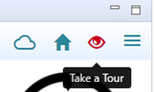
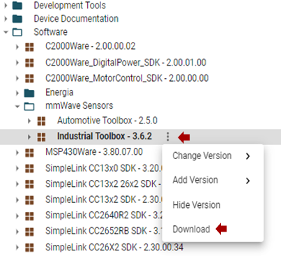

Using TI Resource Explorer & the mmWave Industrial Toolbox
===========
TI Resource Explorer can be accessed via Code Composer Studio or a web browser. It may appear and behave differently depending on the method. Where applicable, directions have been provided for both methods.
{{y Note: The recommended version of Code Composer Studio is 8.3.1. CCS Cloud is not supported. TI Resource Explorer may appear different in other versions of CCS. Chrome is the recommended and tested web browser.}}
_______________________________________________________________
# Get Familiar with TI Resource Explorer
To get familiar with the layout and mechanics of TI Resource Explorer use the **Take a Tour** function.
## From Code Composer Studio (CCS)
1. Open CCS and TI Resource Explorer.
2. In the upper right corner, click the eye icon

## Via Web Browser
1. Navigate to the <a href="javascript:void(0)" onclick="window.parent.jumpToTirexNode('AJoMGA2ID9pCPWEKPi16wg__VLyFKFf__LATEST')"> mmWave Industrial Toolbox in TI Resource Explorer </a>
2. In the upper right corner click the menu icon and then select Take a Tour
<img src = "images/tirex/tour.png"/>
_______________________________________________________________
# Install mmWave Industrial Toolbox
TI Resource Explorer and the mmWave Industrial Toolbox can be accessed via two methods, either via Code Composer Studio or a web browser.
If downloading and installing packages, the recommended method is via Code Composer Studio.
## From Code Composer Studio (CCS)
1. Open CCS (Recommended to use version 8.3.1)
2. In the top toolbar, navigate to **View → Resource Explorer**
<img src="images/tirex/view_resource_explorer.png" width="300"/>
3. In the left side panel with the directory tree, navigate to the mmWave Industrial Toolbox by clicking on
to open and expand **Software → mmWave Sensors → Industrial Toolbox - <VER>**
4. With Industrial Toolbox selected, the main panel should show the Industrial Toolbox landing page. Click on the **Download icon** in the right corner of panel.
<img src="images/tirex/industrial_toolbox_download.png" width="500"/>
5. To verify installation, check that the icon is displayed next to mmWave Industrial Toolbox in the directory tree. This indicates that the packages has been downloaded and is available offline.
## Via Web Browser
1. Navigate to the <a href="javascript:void(0)" onclick="window.parent.jumpToTirexNode('AJoMGA2ID9pCPWEKPi16wg__VLyFKFf__LATEST')"> mmWave Industrial Toolbox in TI Resource Explorer </a>
2. To download the toolbox either:
1) Click the download button in the upper right corner <img src = "images/tirex/download_package.png"/>
OR
2) Hover over the toolbox name in the directory tree, click the breadcrumbs, and then select download.

3. Navigate to the .zip file. Right click and then select **Extract All../...**. Do NOT use the default path. The path must be `C:\ti`.
<img src="images/tirex/extract.png" width="400"/>
4. Verify installation by navigating to and checking for `C:\ti\mmwave_industrial_toolbox_<VER>`
5. Since the package was downloaded outside of CCS, to be able to easily import projects into CCS it is necessary to sync the downloaded package with CCS.
- Open CCS and TI Resource Explorer.
- In the upper right corner, open the menu and select **Scan Desktop**. If the toolbox was installed at `C:\ti`, CCS should find the package; otherwise edit the search path in **Preferences**.
<img src = "images/tirex/ccs_scan_desktop.png"/>
NOTE: If a previous toolbox version was downloaded it may be necessary to change the package version in CCS as shown below for the synched package to appear in the directory tree panel.
_______________________________________________________________
# Access Previous Toolbox Version
## From Code Composer Studio
1. Open CCS and TI Resource Explorer.
2. In the upper right corner, click **Home**
<img src = "images/tirex/ccs_home.png"/>
3. Scroll down and navigate to the Industrial Toolbox and use the drop down menu to select the desired version.
If the package version has already been installed (and synched to CCS) then selecting it will show a green info icon in the upper right.
If not, download button will be enabled.
<img src = "images/tirex/ccs_change_package.png"/>
4. The directory tree in the left panel should now show the selected version.
## Via Web Browser
1. Navigate to the <a href="javascript:void(0)" onclick="window.parent.jumpToTirexNode('AJoMGA2ID9pCPWEKPi16wg__VLyFKFf__LATEST')"> mmWave Industrial Toolbox in TI Resource Explorer </a>
2. Hover over the toolbox name in the directory tree, click the breadcrumbs, select either **Change Version** or **Add Version**, and then select the desired version.
<img src = "images/tirex/select_package.png"/>
_______________________________________________________________
# Import CCS projects from the mmWave Industrial Toolbox into Code Composer Studio
{{y Before importing any projects, ensure that any dependencies (ie correct version of the mmWave SDK) and the toolbox have been already installed.}}
## Using TI Resource Explorer within CCS
* Open CCS and TI Resource Explorer.
* In the left side panel with the directory tree, navigate to the desired lab.
* Under the expanded lab folder, there should be one or multiple CCS projects as indicated by the CCS project icon <img src="images/tirex/import_ccs_project_icon.png"/>. Click on the desired project.
* In the right main panel, the desired project should open. In the upper right corner, click the Import to IDE button .
* The imported project should now appear in the **Project Explorer** panel.
## Importing via CCS Import Projectspecs
Using this method, manually browse to the location of the toolbox installation and import the desired project.
* Open CCS
* In the top toolbar, navigate to **Project → Import CCS Projects../...**
* With the **Select search-directory** option enabled, click **Browse../...**, navigate to the desired lab folder within `C:\ti\mmwave_industrial_toolbox_<VER>\labs\../...`, and then click **OK**.
* Under **Discovered projects**, select the desired projects then click **Finish**.